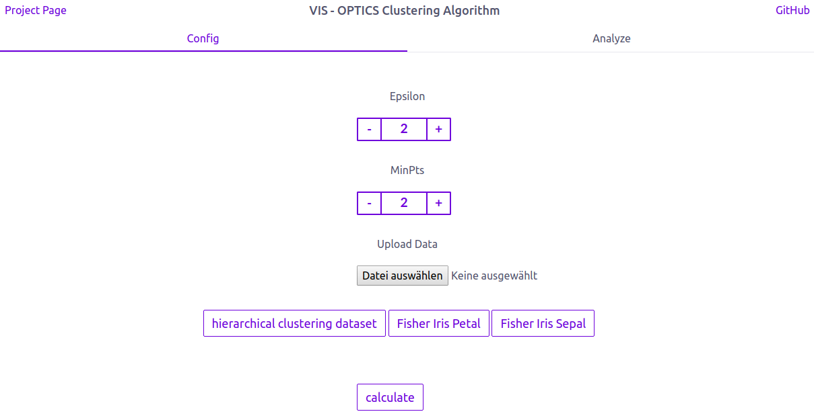

Link to final presentation:
https://1drv.ms/f/s!Aq-SKVUJeFr8iuArr8Bl-7a_ZxU0wQ
Link to M3 presentation:
https://1drv.ms/p/s!AjnVmthTIYPvgad2Ex4NWvFMiNXaSw
Link to our hi-fidelity prototype:
https://gregorredinger.github.io/vis_clustering_algorithms/dist/index.html
Link to this website:
https://gregorredinger.github.io/vis_clustering_algorithms/index.html
This report features animated illustrations and is therefore best viewed in a web browser
|
Markus Hunner |
Gregor Redinger |
M1 - first version of project proposal
M2 - low-fi Prototypes
In our Project we have the goal to provide a visualization for the OPTICS Clustering Algorithm.
For a short introduction to the OPTICS algorithm see:
OPTICS algorithm - From Wikipedia, the free encyclopedia
The OPTICS algorithm was first published in:
Mihael Ankerst, Markus M. Breunig, Hans-Peter Kriegel, Jörg Sander: "OPTICS: Ordering Points To Identify the Clustering Structure." ACM SIGMOD international conference on Management of data. ACM Press. pp. 49–60. (1999)
The paper can be found online at:
http://www.dbs.informatik.uni-muenchen.de/Publikationen/Papers/OPTICS.pdf
As suggested in the grading for M2 we decided to offer several preselected datasets. The dataset used in the following screenshots is a mockup dataset, that features several cluster arrangements, which need an hierarchical clustering solution to get right. With this dataset it's easy to explain how hierarchical clustering works and how the results have to interpreted. As this is a dataset specifically designed to show off hierarchical clustering it's easy to achieve perfect results.
To demonstrate the benefits of our visualization approach in a more realistic setting we included two different 2D-Interpretations of Fisher's Iris flower data set published in 1936 under the title "The use of multiple measurements in taxonomic problems as an example of linear discriminant analysis". The dataset features three clusters corresponding to the species Iris setosa, Iris virginica and Iris versicolor. While Iris setosa can be easily distinguished from the two other species, the clusters of Iris virginica and Iris versicolor are interwoven. This usually leads to results where those two are interpreted as one big cluster. Although OPTICS is unable to produce perfect or good results for this dataset our visualization approach allows a user to easily identify that the "big" cluster holds more information than the OPTICS result suggests. By interactively exploring the parameter space for ε the user is able to see that strict interpretations of what a cluster should be, lead to a dense area in the "big" cluster. This dense area usually corresponds to Iris versicolor or Iris virginica. With enough patience it is even possible to find a ε' where both species can be distinguished with the disadvantage of interpreting many points as noise. While those clustering results are still far from perfect our visualization allows the user to assume that the result may be unsatisfactory and even gives hints what subspace or subset of the data should be examined with other categorization techniques.
Our Visualization is designed as a Single Page Application. In the navigation section we provide links to our project page (for more information about our ideas for the visualization) and to our github page (for more information about our code). The application itself is divided into two sections. The „config“ section is the place, were a user can upload his data and adjust the Optics Algorithm by changing the parameters epsilon and minPts.
We also provide three sets of test data, so a user can test our application without a dataset.
The „analyze“ section is the place, where the user can examine his inserted Data.

Using the reachability plot as a scented widget allows the user to use a slider to set a ε' interactivly. The selected cutoff colors the shown data to differentiate the clusters at this ε'-value. Coloring a reachability plot is usually not a feature included with implementations of the optics-algorithm. It is assumed that a user knows how to interpret a reachability plot and therefore doesn't need such a visual help. However we implemented a function to color the data points in a reasonable manner, which supports up to 20 clusters. The colorization can also be seen in the scatterplot and makes it easy to identify clusters in a 2-dimensional space.
playing with the ε' slider allows a user to explore the cluster hiararchies in a interactive way. The displayed value for ε' allows the viewer to identify the exact cutoff at which clusters are divided into several subclusters or snap together into bigger clusters.

Both, the scatterplot and the reachability plot provide a highlighting function on mouse over. The selected data point changes its color to a darker tone to allow identification of the position in both views. Additionally the range query radius used by the OPTICS algorithm is shown in the scatterplot. A tooltip in the reachability plot shows the calculated reachability distance for the highlighted point.
Frank, the owner of a local grocery store wants to offer his customers the option of a 10 Minute delivery, to compete with Amazon Fresh, that started recently in his city. Because a 10 minute delivery is not possible in the whole city, he plan to restrict his offer to a specific street. He also thinks that only people with a relatively high income are willing to pay the delivery fee, so he want to limit his marketing to these kind of people. Thankfully he had a list with the income and the residence of all people of his city as json. The problem is to evaluate the list by himself would take way too much time, so he decided to use our application instead.
At first he imports his list Data in our application and adjust the epsilon and minpts parameters. After analyzing the scatterplot (left top), he quickly see that the customers with high income are in a blue cluster in the top-right of the scatterplot. Now he searches in the spreadsheet view (right-top) after all entries with the street, where he plan to offer his delivery service. Because all clusters are colored in the table view, he can complete his search in no time.
Use Case 2 - Offering tutoring classes
Mr Fisher is the principal of a high school and he plan to offer some tutoring classes to his pupils, but because his budget is limited, he is only able to build a limited number of that classes. So he decided to only offer them in disciplines where many pupils have problems. He had a list of his pupils and their grades and analyzes them with our Application.
He uploads the json file and click calculate. Then he switches to the analyze tab. He doesn't need help during this workflow, because the concept "first config then analyze" seems very natural and logical to him. He adjust the epsilon value with the histogram view and examine the clusters in the scatterplot. He decided to examine the clusters even further and switch to the spreadsheet. The Rows are colored in the cluster colors so he is able to find the list of pupils, belonging to a specific cluster really fast.
Now he knows which pupils had problems in specific disciplines and where he can offer tutoring classes with the highest efficiency.
For now we dropped every dashboard except for the one shown below. We replaced the net view with the table view from a other dashboard discussed in M2 as this makes it easier to show the proper functioning of our result visualization.

According to the suggestions we get on M2, we decided to make some major changes to our original design.
Our first change was the separation of inserting data and adjust the algorithm parameters from examining the algorithm results. So we separate this two tasks in a config page (inserting data and adjust the algorithm) and a analyze page(examining the algorithm results).
As suggested we abandoned the usage of drop down menus and use a histogram with a slider instead. According to the position of the slider (which represents the epsilon value) the histogram show the currently detected clusters in different colors. A horizontal line on the right side of the slider, which spans the whole length of the histogram, makes it easier to see, how a reachability plot has to be interpreted.

M2 featured several visualizations utilizing cluster dendrograms. Unfortunatly there exist no easy way to generate those with d3. The suggestion most often found, advises to use a visualization similar to what we called Graph- or Tree-View in M2. Unfortunately this means to lose the information encoded by the single axis of a dendrogram, the ε-Axis. While a tree view still perserves the information on cluster hierarchies, it is not possible to decide on a possible ε-cutoff with this form of visualization. Additionally we lose the possibility to link our ε'-Slider with the dendrogram. An example of what is considered a dendrogram in the context of d3.js can be found here:
Cluster Dendrogram by Mike Bostockwe encountered several unsolved problems regarding the d3-library and the usage of javascript bundler like Babel or Webpack. Relevant discussions can be found on Github:
While the problem with the d3-tip subpackaged seems to be solveable, the loose of brushing events still is a problem in our project
and meant to exclude the feature of a brush-selection in the reachability plot for now.
the d3-README states:
# d3.event
[...]
If you use Babel, Webpack, or another ES6-to-ES5 bundler, be aware that the value of d3.event changes during an event! An import of d3.event must be a live binding, so you may need to configure the bundler to import from D3’s ES6 modules rather than from the generated UMD bundle; not all bundlers observe jsnext:main. Also beware of conflicts with the window.event global.
A possible solution could be to forgo the use of webpack. As restructuring our project for this would be a time consuming task we decided to keep this option in mind for M4 and remove the reachability brush for now.
Mihael Ankerst, Markus M. Breunig, Hans-Peter Kriegel, Jörg Sander (1999). OPTICS: Ordering Points To Identify the Clustering Structure. ACM SIGMOD international conference on Management of data. ACM Press. pp. 49–60.
R. A. Fisher (1936). "The use of multiple measurements in taxonomic problems". Annals of Eugenics. 7 (2): 179–188.
Requirements for M3 providing minimal functionality
Additional Requirements for M3/M4 resulting from our M2 proposal
Features which were originally not planned
M3 requirement of 4 visualization techniques descussed in the lecture